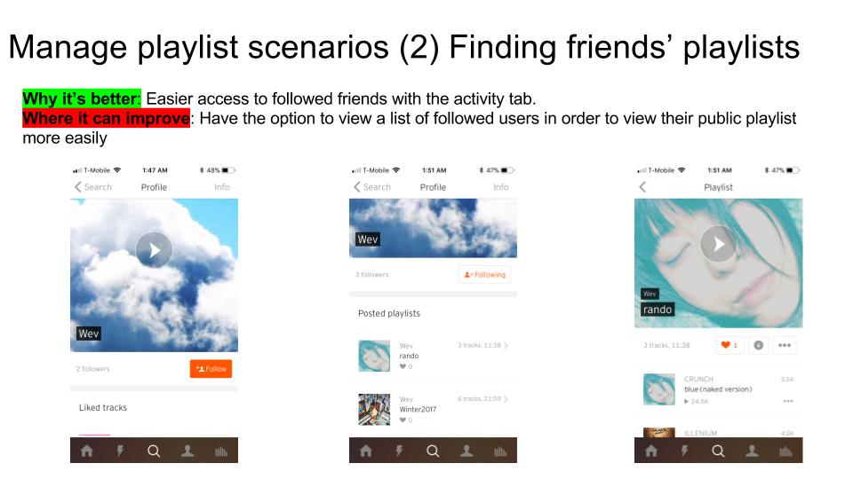
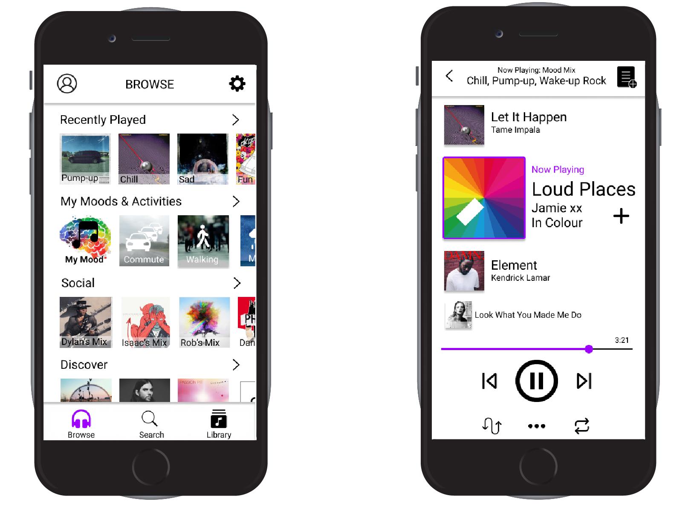

I am a UCSD senior pursuing a degree in cognitive science: human computer interaction. I am an aspiring UI designer and user researcher. My main interests include user experience, interaction design, and digital & multimedia marketing, and I aim to pursue a career that encompasses all of my interests.

Timeline: Eleven Weeks (March — June 2016)
Our goal was to use human centered design to improve voter experience for college students to increase voter turnout.
Role: Survey Design, Held Interviews, Competitive Analysis,
We began with secondary research on the topics of voter engagement. We learned that voter apathy is one of the main factors that are preventing eligible voters from registering and registered voters from voting. We then conducted an online survey asking UCSD students if they are registered to vote, if they had voted before, and reason for voting/not voting. The survey established our target audiences, the registered voters who voted, registered voters who are hesitant to vote, and students who are not registered to vote. We were also able to recruit interviewees for deeper personal insights on their thoughts regarding voting. Using the data we gatehred from survey and iterviews, we found three emerging themes:caring, convenience, and information.
With the themes in mind, we conducted contextual interviews and field observations. We got in touch with a campus organization, “SOVAC” (Student Organized Voter Action Committee),who has been planning multiple events that assist student population with the vointg/registering process. One of these evnets — “Voterpalooza” — we later participated in. From Voterpalooza We learned that people who did care about voting had some registration struggles, others were confused on voting method (mail, or booth) and voting location. We noticed that a large majority of people who stopped by Voterpalooza were informed via social media, e.g. Facebook.
Additional research indicated that social media engagement was one of the most effective way to gather youth vote which were in line with what we observed at Voterpalooza. We then considered multiple social media platforms and decided to use Snapchat custom filters as our solution, as they allowed for ease of integration in college student’s lives, while simultaneously allowing custom information to be displayed based on location. Due to the fact that UCSD colleges will have multiple voting polls based on where a student lived on campus, we wanted to create filters targeting each sub-community while still being able to access the information everywhere on campus.
We never implemented our final solution. Instead, we tested custom filters aimed at the May 23rd voter registration deadline, as we needed to collect data before the quarter ended. We tried to utilize research suggesting it was better to call people “voters” than people who’ve “voted.” Sadly, low usage over a short period of time lead to inconclusive results. Our results weren’t clear, but they were hopeful.
This project taught the importance of diverging and pivoting during the design process. We were able to test our designs and use the data gathered to iterate on the next pivot.
Timeline: Eleven Weeks (March — June 2017)
UX Designer, User Researcher
Skills: Needfinding, Storyboarding, Interviewing, A/B testing, Prototyping
Tools used: Illustrator, Unbounce, Google Analytics/Adwords, Balsamic
A platform for getting film lovers back into the theaters.
We get customers the best deals through flexible ticket pricing by working with local theaters. With Going, customers can go to the movies at a more affordable price with the power of crowdsourcing. Theaters set ticket goals and customers save money! The movie goers become recruiters by sharing the deal with friends and family and unlocking lower prices. Overrated prices shouldn’t stop you from the movie experience.

In the beginning our group focused on creating a dating/social app that focused on building relationship through a planned event. However after taking a closer look at the market through competitive analysis we realize that the dating market was too saturated and dating app users are often one time users who will ultimately abandon the service after successful match or just simply gave up. Our team then shifted to crowdsourced event planning. Inspired by on campus organization that held free movie premier for students at local theaters. We chose to focus on the Cinema experience because we know that movies attract a large crowd and that the movie industry is slowly declining with streaming services becoming more popular.
We created multiple storyboards reflecting on different strategies that might bring more traffic back to the theaters. We then tested these storyboards with online surveys.


From our surveys we learned that people are more motivated to go to the theaters when ticket deals are available and when friends plan together. With these idea in mind we came up with a businesss plan that utilized crowdfunding abilites to drive lower ticket prices. The more people commit to a movie showing the cheaper the ticket is for that showing.To test our business idea we contacted multiple local theater manager and held phone as well as in person interviews presenting our minimal viable product. We also performed service enactment with the stakeholders (movie goers, theaters) to see if they would use our product.
The results were positive. Local theater supported the idea. Users liked the idea and would recommened such service amongst friends. During this process we also mentioned the possibility of bringing older films back to the theaters.
The following are some quotes we received from service enactment.
Our prototype demonstrated the price unlock and commit feature.
Price Unlock Feature: For showings that are not projected to sell very well, theaters can offer discounts for each ticket goal set. When a ticket goal is reached, a new price drop will be unlocked. Customers can see what discounts to expect and buy tickets at the goals they want to join in on.
Commit Feature: They can also see how many more people need to commit to a goal in order to reach the next one.Potential customers who do not want to buy tickets right away can choose to commit to a specific ticket goal and once the goal is met, tickets will automatically be purchased for the customers.

We also explored with possible future function such as throwback Movies, where movie goers can relive opening weekend at an affordable price. We hope to implement a voting function for movie enthusiasts to vote on the movies they want to see in theaters again. GOING users can suggest films, anything from classic to independent or even foreign films. The movie that wins the vote will be made available in the partnered theaters.
Because we are the middle man providing more affordable tickets from theaters to movie goers we will charge a small service fee from the movie goers and a small % per ticket sale from the theater. Percentage of ticket sale may vary due to the relationship between theaters and movie studios. Another portion of our revenue will from advertisement on the application.
Timeline: three Weeks (Nov — Dec 2017)
UX Designer, User Researcher
Skills: Competitive Analysis, Needfinding, interviewing, Prototyping
Tools used: Figma, Invision
For this assignment we conductee a total of 9 interviews, asking each participants their prefered music application and their playlist management behaviors. From our interviews we complied a list of 10 user scenarios.
Create Playlist:We then performed competitive analysis on multiple music application that had the ability to create and manage playlists. Within each of these application (amazon prime music, SoundCloud, and Spotify) we looked for good and bad examples of good user flow. We also performed competitive analysis of information architecture creating site maps and genre maps for each competing applcation on the market
The first decision we had to make was the items on the top navigation tabs.From our interviews we found the following
We decided to stick with 3 broad navbar tabs: Browse, Search, and Library. These three tabs included most of users' actions and at the same time increase efficiently while decreasing chance for error.
This is what the user will see first when they open the application. From our interview we found that most user never use the home page in most applications instead they head directly to the following pages.
We desided to create a home screen that included all of users' most likely actions above the fold so taht the users can reach their desired music without scrolling.
From our interviews we learned that most peole have tried spotify's premade mood/activty playlists but few use it regularly. Most of our participants create their own playlist for a specific mood or activity making a more personal experience; however this method does not introduce new music into their library. Our task here is to find a balance where users can create mood/activity playlists with songs from their own library as well as add new songs that fit the mood/activty.
On the home screen, under “Mood Activity, the user will see several mood or activity based playlists, which could be user-created. If those do not fit them, they may go to a playlist generator, which allows them to pick as many or as few criteria (mood, activity, genre, etc), from which the app will automatically generate a playlist.
We decided to revamp the "Now Playing" screen with play pause controls because we wanted to increase visualization for the playlists and queue functions. Our design allows users to see up the 2 upcoming tracks as well as 1 previously played track all in one screen.

Use this area of the page to describe your project. The icon above is part of a free icon set by Flat Icons. On their website, you can download their free set with 16 icons, or you can purchase the entire set with 146 icons for only $12!

Use this area of the page to describe your project. The icon above is part of a free icon set by Flat Icons. On their website, you can download their free set with 16 icons, or you can purchase the entire set with 146 icons for only $12!

Use this area of the page to describe your project. The icon above is part of a free icon set by Flat Icons. On their website, you can download their free set with 16 icons, or you can purchase the entire set with 146 icons for only $12!